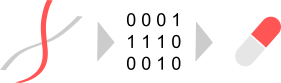

Decoding Human Regulome for Cancer Patients
公益財団法人がん研究会
丸山玲緒 研究室
がん研究所・がんエピゲノムプロジェクト
NEXT-Gankenプログラム・がん細胞多様性解明プロジェクト
NEXT-Gankenプログラム・コア解析基盤プロジェクト
MISSION
私が研究を続ける動機は「将来一人でも多くのがん患者さんを救うこと」それだけです。これだけは譲れません。臨床医をしていた時に出会った多くのがん患者さんとその家族、私を導いてくれた恩師・・・必ずがんを克服しますと誓ったあの時の気持ちを忘れてはいません。がんについて研究することは自分の使命であると常に思っています。またこの活動そのものが現在がんに苦しむ患者さんやご家族の心の救いになると信じて、研究を続けています。
一方で研究は使命感だけではうまくいかないことも理解しています。努力は“夢中”にはかなわない。好奇心のみに従って夢中になって何かを追求することこそが研究の推進に重要です。私自身、がんの魅力にすっかり取り憑かれています。がんについて学べば学ぶほど、がんが如何に複雑で多様であるかということを思い知らされます。その複雑性には神の存在すら感じます。生命進化の縮図を見るようであり、宇宙や哲学のような無限の深さもあります。「がんとは一体何か」ということを一日中考え続けることができます。一人でも多くの研究者にがん研究の面白さを伝え共有する、これも自身の大事な使命と思っています。
研究は一人ではできません。様々な人の協力や異分野の融合が不可欠です。「がん」に興味を持った多様な人間が集まり、メンバー全員がワクワクした時間を過ごしながらがん研究に没頭できる環境を作ること、がん研究会にそのような「場」を作ること、これが私のミッションです。願わくば、研究者だけではなく、臨床現場のスタッフ、患者さん、ご家族までもがチームを作り一丸となってがん研究を推進する、がん研究会にそのような「場」を作りたいです。それが最終的には「一人でも多くのがん患者さんを救うこと」という目的の達成につながると信じています。この理念に共感し一緒に挑戦して下さる仲間を求めています。
(2021年7月丸山玲緒)